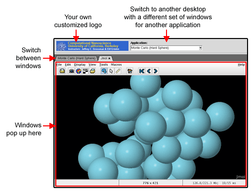
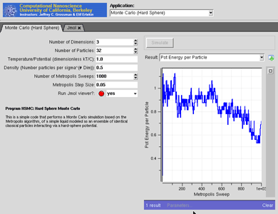
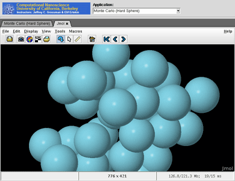
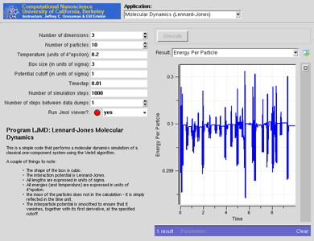

Tools
Combining Tools
Overview
Some of the tools on any hub are really a collection of 3-5 programs acting like a "workbench" for a particular application. Berkeley Computational Nanoscience Class Tools is one such example. It is really a collection of several separate Rappture-based applications, all running on the same desktop, in the same tool session.
We've created a simple window manager called nanoWhim that makes it easy to switch back and forth between several applications on a desktop--without all of the fuss and bother associated with a typical window manager. A tool using nanoWhim looks like this:

The combobox at the top lets users switch between applications. Each window that pops up within an application is managed by a set of tabs.
nanoWhim is based on the Whim window manager written in Tcl/Tk. We needed something like this for nanoHUB to create a very simple tabbed interface, so users could easily switch between a couple of tools within the same tool session. A more comprehensive workflow interface is under development, but this simple solution is sometimes useful.
Flipping between tools
The following example shows a Rappture-based application that popped up a separate Jmol application for molecular visualization. Jmol pops up in its own tab, and you can easily switch back and forth between the original application and the Jmol popup by clicking on the tabs, as shown below:


You can click on the x on the Jmol tab to close that application.
You can select another application by using the combobox at the very top of the window. That brings up another Rappture-based application, with a different set of inputs and outputs.

You can run each program independently, and the outputs stay separate. If you flip back to the previous application, it will be sitting just the way you left it.
Configuring nanoWhim
To use nanoWhim, you'll need to create two files in the "middleware" directory for your tool: nanowhimrc and invoke.
The nanowhimrc File
This file configures the various applications that pop up within the tool session. Here's a very simple example:
# set an icon
set.config controls_icon header.gif
# first app is an xterm
start.app "Terminal Window" xterm
# second app is a web browser
start.app "Web Browser" firefox
Any line that starts with a pound sign (#) is treated as a comment.
The set.config command configures various aspects of the window manager. Right now, the only useful option is controls_icon, which sets the icon shown in the top-left corner of the window. Note that a relative file name is interpreted with respect to the location of the nanowhimrc file itself. In this case, we've assumed that the image header.gif is sitting in the same directory as nanowhimrc.
The rest of the file contains a series of start.app commands for each application that you want to offer. In this case, the first application is called "Terminal Window" and is just an xterm application. The second application is the Firefox web browser, which we label "Web Browser".
Here's a more realistic example:
#
# Customize the nanoWhim window manager
#
set.config controls_icon header.gif
start.app "Average" \
/usr/bin/invoke_app -t ucb_compnano -T $dir/../rappture/avg
start.app "Molecular Dynamics (Lennard-Jones)" \
/usr/bin/invoke_app -t ucb_compnano -T $dir/../rappture/ljmd
start.app "Molecular Dynamics (LAMMPS)" \
/usr/bin/invoke_app -t ucb_compnano -T $dir/../rappture/lammps -u lammps-12Feb07
start.app "Monte Carlo (Hard Sphere)" \
/usr/bin/invoke_app -t ucb_compnano -T $dir/../rappture/hsmc
start.app "Ising Simulations" \
/usr/bin/invoke_app -t ucb_compnano -C "java -jar $dir/../bin/ising-1.0.jar"
Each start.app command starts a different Rappture-based application. The first argument in quotes is the title of the application, which is displayed in the combobox at the top of the window. The remaining arguments are treated as the Unix command that is invoked to start the application.
The commands shown here all use the /usr/bin/invoke_app script to invoke a Rappture-based application. The -t argument for that script indicates the toolname. The -T argument indicates which directory contains the Rappture tool.xml file. You can use $dir here to locate the directory relative to the nanowhimrc file.
The invoke File
The nanowhimrc file configures the window manager, but the middleware/invoke script actually invokes it. Every tool on nanoHUB has its own invoke script sitting in the middleware directory. Your invoke script should look like this if you want to use nanoWhim:
#!/bin/sh
/apps/share/nanowhim/invoke_app "$@" -t ucb_compnano
This script invokes the nanoWhim window manager for the tool specified by the -t argument. This is the short name that you gave when you registered your tool. This script looks for the middleware/nanowhimrc file within your source code, and launches nanoWhim with that configuration.
Testing Your Tool
Normally, you develop and test tools within a workspace in your hub. If you're using nanoWhim, that's still true for the individual applications. In other words, you can test each application individually within a workspace. But to get the full effect of the nanoWhim manager running all applications at once, you'll have to get your tool to "installed" status, and then launch the application in test mode. For details about doing this, see the tool maintenance documentation for hub managers or the lecture on Uploading and Publishing New Tools. Look at the tool status page for your own tool project and find the Launch Tool button. This is what you would normally do to test any tool before approving it. Once you're in the "installed" stage and you're able to click Launch Tool, the nanoWhim configuration should take effect and you'll be able to test the overall combined tool.